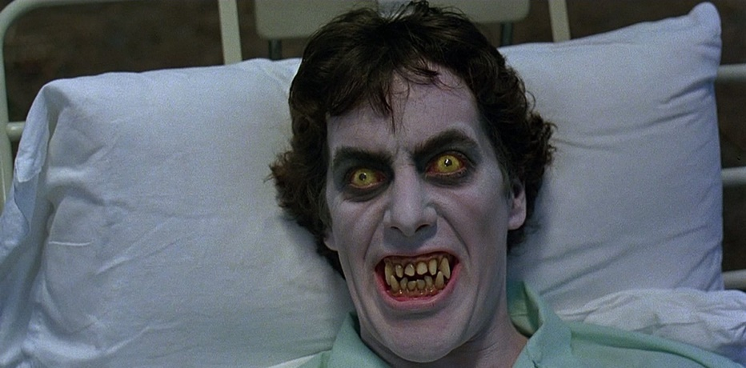

Merus nasce dall’unione tra creatività e tecnologia, con l’obiettivo di formare le nuove generazioni di sviluppatori, designer e animatori digitali.
Fondata da un team di professionisti con anni di esperienza nell’industria videoludica, cinematografica e del software, Merus è più di una scuola: è un laboratorio di idee, innovazione e passione.
Nel tempo ci siamo evoluti, ma la nostra missione è rimasta la stessa: offrire percorsi formativi di alta qualità, accessibili, aggiornati e centrati sulla pratica. Che si tratti di programmazione, game development o animazione 3D, ogni corso Merus è pensato per trasformare l’apprendimento in esperienza concreta.
Oggi Merus è un punto di riferimento per chi vuole entrare nel mondo della produzione digitale, grazie a un approccio didattico che combina tecnica, creatività e orientamento al lavoro.
Diamo valore al talento e lo aiutiamo a crescere, in un ambiente dinamico e stimolante dove ogni studente può trovare il proprio stile e costruire il proprio futuro.
Testimonianze dei nostri studenti:

ANDREA PORTOAL Prima di questo corso ero un appasionato di gaming, grazie a Orazio Lezzini ho trasformato la mia passione in un lavoro.
JACK MUNNIZZ
Fare questo corso di animazione mi ha salvato la vita. Prima ero povero, ma grazie al docente Ettore Maronno sono diventato un esperto in animazione 3D
In questo video, il nostro docente Ettore Maronno ti guida alla scoperta del corso di Animazione 3D: un percorso creativo e tecnico pensato per chi vuole imparare a modellare, animare e dare vita a personaggi e scene tridimensionali.
Dalla modellazione alla rigging, dall’animazione al rendering finale, il corso ti offre tutti gli strumenti per entrare nel mondo della grafica 3D professionale, con un approccio pratico e orientato al portfolio.